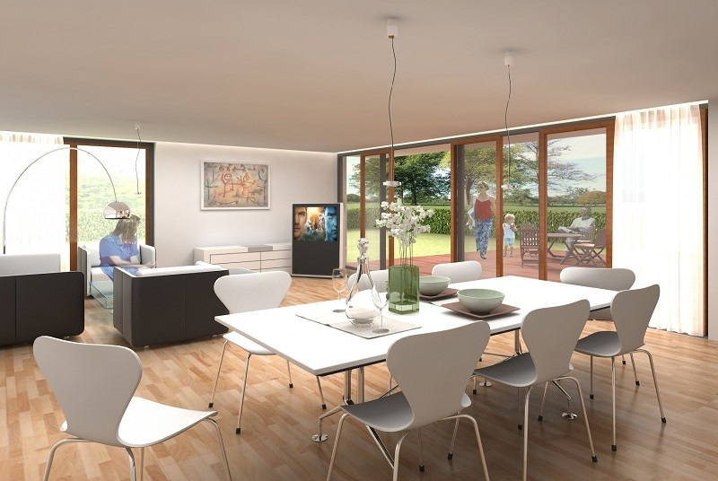

Youtube網路頻道的風行，使得視覺動態影音已成為超越平面視覺的主要關鍵，此技術廣泛被運用在任何在行動電話、網站、電影、電視、廣告、音樂等，因此市場求才若渴，提供了完整的影視動態特效影片製作課程，課程中不單單只學習單一套特效編輯軟體，更加入了影視美學編輯技巧，加上仿製學習成功影視包裝的案例，課程當中加入了3d元素，讓視覺感官更加能加深觀看者的興趣及創造者個人的技巧表現，多套軟體整合教學，嚴格要求要以最符合業界的作業環境，搭配雙螢幕教學，從專案包裝企劃、軟體操作、特效運用、場景運鏡、影片合成，剪輯發行，每一學習流程都以視覺創作設計師標準進行，最實務性質的教學規劃，讓您能馬上就業，不會有所遲疑。
課程由室內空間美學概念為出發點，帶領學員進入完全3d學習的環境，經由SkecthUp快速建立3d視覺空間，立即能上手。室內建模內的檔案共同性質融合至3dMax運用，以實境三房二廳進行室內空間規劃，加上各類型需求設計出多款，同空間但不同風格的設計技法，虛擬化的空間，搭配軟體功能，加上建模、材質貼圖表現、燈光設定、色調、渲染出完美日景、夜景極至呈現，貼近真實的室內設計視覺特效，運用攝影機，使整個空間更能創造出最完美表現方式，平面與動畫相做結合，再加上PhotoSHOP後製編修，活靈活現的室內空間可讓業主分不清是真實還是實景照片，學習後除可獨立完成室內創意設計及3d設計，更能延伸至任何虛擬實境空間設計，成為一位室內設計3d專業人士。
